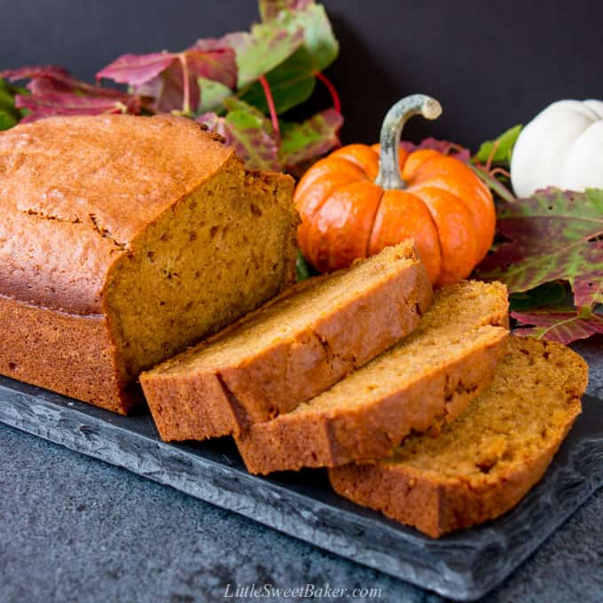

Pumpkin Loaf Recipe

Embrace the cozy flavors of autumn with our delicious pumpkin loaf recipe. This delectable treat is a harmonious blend of moist, spiced pumpkin bread that's perfect for savoring on crisp fall mornings or as a delightful dessert any time of year. With its warm spices and the comforting aroma of pumpkin, this loaf is sure to become a seasonal favorite.
- 2 cups all-purpose flour
- 2 tsp pumpkin pie spice
- 1 tsp baking soda
- 1/2 tsp salt
- 1 1/2 cup canned pumpkin puree
- 1/2 cup vegetable oil
- 1 1/2 cup granulated sugar
- 2 large eggs
- Combine your flour, pumpkin pie spice, baking soda, and salt in a large bowl.
- In a medium bowl, whisk together your pumpkin puree, vegetable oil, sugar, and eggs.
- Add the wet ingredients to the dry ingredients and stir until just combined.
- Spoon the batter into a greased 9×5″ loaf pan and bake for about 45 minutes.
- Enjoy!